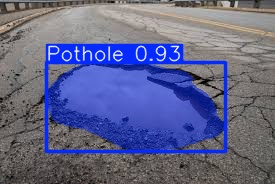
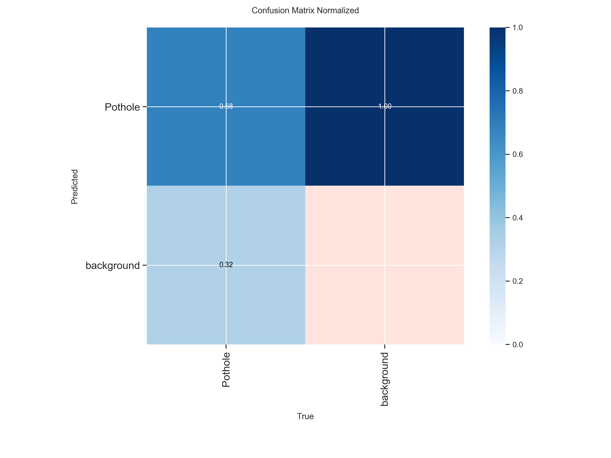
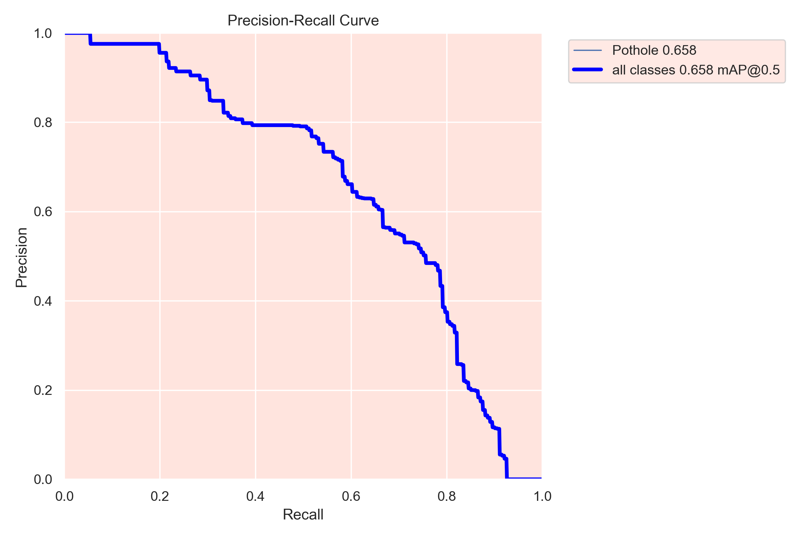

CITYFIX AI
Building Safer Roads with
AI-Powered Pothole Intelligence
Detects, segments, and analyzes potholes
Enables data-driven smart city decisions

"AI transforming raw roads into actionable insights"
About CityFix AI
Complete Road Health
Understanding
Our computer vision architecture goes beyond simply finding potholes. It extracts rich geometric and spatial data from every frame to build a comprehensive view of infrastructure degradation.
Location Detection
Precise surface mapping
Size & Dimension
Area, width, and height calculation
Severity Classification
Hazard prioritization & scaling
Count Tracking
Multi-frame occurrence aggregation
System Workflow
The Intelligence Pipeline
An end-to-end automated process that turns unstructured visual data into structured municipal action plans.
1. Input Acquisition
Camera / Image / Video stream ingestion.
2. YOLOv8 Processing
Segmentation model inference on each frame.
3. Mask Generation
Pixel-level pothole masks and bounding boxes.
4. Severity Calculation
Area and dimension computation, severity tagging.
5. Data Storage
Structured storage in database with metadata.
6. Dashboard Output
Analytics visualization with charts and KPIs.
7. Geo-Map Integration
Location-tagged heatmap and spatial analytics.
8. Real-time Work Status
Real time work tracking for the dashboard administrator.
Key Innovation
Combined Intelligence → Better Decisions
Why choose between speed and accuracy? Our architecture runs object detection and semantic segmentation simultaneously for a complete understanding.
Detection
Bounding Boxes
- Fast localization
- Object counting
- Confidence scoring
Segmentation
Pixel-Perfect Masks
- Exact shape outlining
- Area calculation
- Severity determination
Core Capabilities
Structured Intelligence Grid
Dual Model
Detection and Segmentation run synchronously for validated predictions.
Area Calculus
Automated calculation of pixel-area and hazard dimensions.
Geo-Mapping
Geo-tagging and location-based filtering for response crews.
Multi-Input
Processes static images, video batches, and live streams.
Model Performance
Balanced, Stable, and Deployment-Ready Model
Empirical validation metrics prove the model's reliability in identifying true hazards while ignoring background noise.
Precision
Low False Positive Rate
Recall
Low Missed Detection Rate
mAP50 Validation
76.0%
F1 Score Peak
0.78
Fitness Score
1.0+
Training Efficiency
Optimized Learning Trajectory
Peak Performance
Optimal weights achieved early without epoch bloat.
Minimal Overfitting
Validation loss perfectly tracks training loss.
Stable Curve
Consistent learning avoiding vanishing gradients.
Model Thinking Visualization
Advanced Analytics Hub
Step inside the mind of our AI. Explore detailed visual proofs of our model's robustness, including Precision-Recall metrics, F1 optimizations, and normalized Confusion Matrices.
View Research DataConfusion Matrix

Confidence Curve

Real-World Impact
Where This System Actually Works

Smart City Planning
Geo-spatial damage heatmaps.

Municipal Maintenance
Targeted repair dispatching.

Crowd-Sourced Reporting
Citizen-to-admin portals.
Competitive Edge
Why CityFix Stands Out
Future Enhancements
Where This System Is Going
AI Health Scoring
Automated road degradation predictions over time.
Drone Inspection
Integration with aerial UAV scanning feeds.
Mobile App
Native edge-device inference on smartphones.
Automated Alerts
Direct integration with city repair dispatch systems.